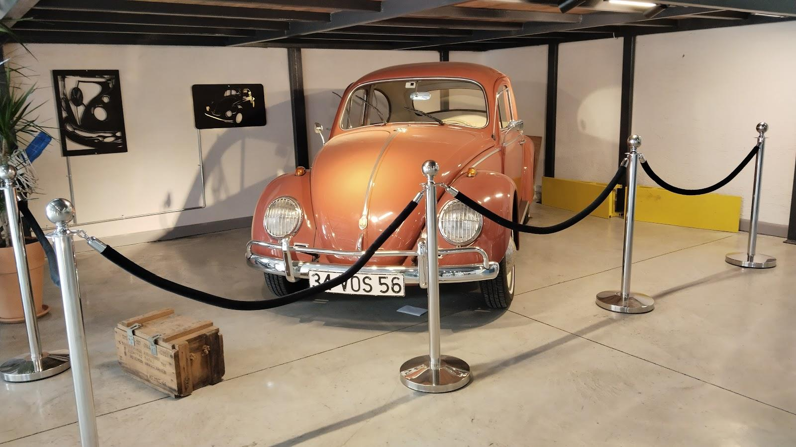

“Atmosferi ilk girişte beni çok etkiledi. Çok farklı bir konsept.”
M. S. (M.S.)
Google yorumunu aç ↗AVCILAR / ÜNİVERSİTE MAHALLESİ
COFFEE — SANDWICH — DESSERT
İşinize ara verin ya da bilgisayarınızı açın.
Kahve ve sohbet için Pas & Sons’ta yer var.

ESKİ BİR KLASİK. YENİ BİR BULUŞMA NOKTASI.BİZİM KÖŞE
Yüksek tavan, ahşap masalar, duvarda bisiklet; bir köşede klasik Volkswagen. Pas & Sons’un kendine has bir havası var.
Ortak çalışma alanında günün işlerini toparlayın. Sonra masayı arkadaşlarınıza açın.
Instagram’da Pas & Sons ↗KAHVE & MUTFAK
Kahveyle başlayın, pizza için kalın.
Günün seçeneklerini bize sorabilirsiniz.
Barın arkasından, masanıza.
Kahvenin yanına bir pizza molası.
Bu bölüm ürün seçkisidir. Güncel çeşitler, fiyatlar ve alerjen bilgisi için işletmeyle iletişime geçebilirsiniz.
SHARED WORKSPACE
Bilgisayarınızı, defterinizi, planlarınızı getirin. Pas & Sons’un ortak çalışma alanında kendinize bir köşe seçin.
Çalışma alanını sorun ↗GOOGLE YORUMLARI
“Atmosferi ilk girişte beni çok etkiledi. Çok farklı bir konsept.”
M. S. (M.S.)
Google yorumunu aç ↗“Hizmet güler yüzlü ve hızlıydı. Çalışmak için sakin ve keyifli bir ortam sunuyor.”
Semanur Kepenek
Google yorumunu aç ↗Google yorumlarından kısa alıntılar. Puan ve yorum sayısı kontrol tarihindeki kaydı yansıtır.
ROTANIZ PAS & SONS
Güncel menü ve çalışma saatleri için bize ulaşabilirsiniz.